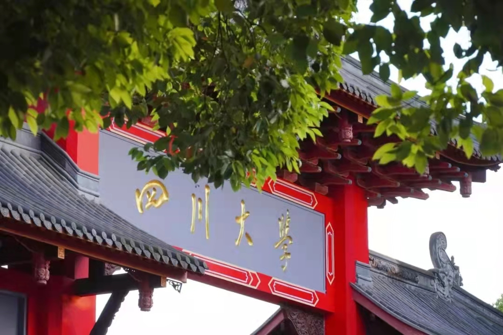

四川大学

四川大学（Sichuan University），简称“川大”，位于四川省成都市，是中华人民共和国教育部直属
、中央直管副部级的全国重点大学；位列国家“双一流”、 [102] “211工程”、“985工程”，入选“珠峰计划”、
“2011计划”、“111计划”、“强基计划”、卓越工程师教育培养计划、卓越医生教育培养计划、卓越法律人才教育培养计划、
国家建设高水平大学公派研究生项目、全国深化创新创业教育改革示范高校，为学位授权自主审核单位、
中国研究生院院长联席会会员、医学“双一流”建设联盟成员、自主划线高校，是国家布局在中国西部重点建设的高水平研究型综合大学。
学校由原四川大学、原成都科学技术大学、原华西医科大学三所全国重点大学经过两次合并而成。原四川大学起始于
1896年四川总督鹿传霖奉光绪特旨创办的四川中西学堂，是西南地区最早的近代高等学校；原成都科学技术大学是新中国
院系调整时组建的第一批多科型工科院校；原华西医科大学源于1910年由西方基督教会组织在成都创办的华西协合大学，
是西南地区最早的西式大学和中国最早培养研究生的大学之一。1994年原四川大学和原成都科学技术大学合并为四川联合大学，
1998年恢复“四川大学”校名。2000年与原华西医科大学合并组建为新的四川大学。
截至2022年1月，学校有望江、华西和江安三个校区，占地面积7050亩，校舍建筑面积280.64万平方米，
在建眉山校区；有教学科研岗共6571人，全日制普通本科生3.7万余人，硕博士研究生2.9万余人。

四川大学是教育部直属全国重点大学，是国家布局在中国西部的重点建设的高水平研究型综合大学，是国家
“双一流”建设高校(A类)。四川大学地处中国历史文化名城——“天府之国”的成都，有望江、华西和江安三个校区
，占地面积7050亩，校舍建筑面积280.64万平方米。学校正与眉
山市合作共建四川大学眉山校区。校园环境幽雅、花木繁茂、碧草如茵、景色宜人，是读书治学的理想园地。
四川大学由多所学院合并而成（详见“学校历史沿革”） [105] 。原四川大学起始于1896年四川总督鹿传霖奉
光绪特旨创办的四川中西学堂，是西南地区最早的近代高等学校；原成都科技大学是新中国院系调整时组建的第一批
多科型工科院校；原华西医科大学源于1910年由西方基督教会组织在成都创办的华西协合大学，是西南地区最早的西式
大学和国内最早培养研究生的大学之一。1994年，原四川大学和原成都科技大学合并为四川联合大学，1998年更名为四川大
学。江泽民、李鹏等党和国家领导人就两校合并为学校题词并寄予深切厚望。2000年，四川大学与原华西医科大学合并，组建了
新的四川大学。李岚清同志在考察新四川大学时说：“四川大学是我们改革最早的大学，对我国高校的改革作出了历史性的贡献，
可以说是高校体制改革的先锋。”在2008年“5·12”汶川特大地震抗震救灾期间，温家宝等党和国家领导人先后到四川
大学视察慰问。2016年，李克强总理来校视察，勉励川大要为全国“双创”带头，多出世界一流学科。
四川大学大师云集，名师荟萃。学校教学科研岗共6571人，中国科学院和中国工程院
院士23人（其中双聘院士11人），四川大学杰出教授7人，国家自然科学杰出青年基金获得者65人，
国家优秀青年科学基金入选者69人 ；“973”首席科学家7人（9项）；国家级教学名师14人；国家科技
重大专项课题负责人22人（24项）；国家重点研发计划项目负责人62人；国家社科基金重大招标（委托）及
各类专项项目获得者69人（77项）；国家创新人才
推进计划“中青年科技创新领军人才”22人、“重点领域创新团队”3个。
四川大学在长期的办学历程中，形成了深厚的人文底蕴、扎实的
办学基础和以校训“海纳百川，有容乃大”、校风“严谨、勤奋、求是、创新”为
核心的川大精神。近年来，学校围绕建设具有中国特色、川大风格的世界一流
大学的奋斗目标，确立了“以人为本，崇尚学术，追求卓越”的现代大学办学理
念，建立了“以院系为管理重心，以教师为办学主体，以学生为育人中心”的管
理运行新机制，提出了“精英教育、质量为本、科教结合、学科交叉”的人才培
养指导思想，确立了培养“具有崇高理想信念、深厚人文底蕴、扎实专业知识、
强烈创新意识、宽广国际视野的国家栋梁和社会精英”的人才培养目标。面向新
时代，学校将更加聚焦和强化“厚通识、宽视野、多交叉”，让“开放、包容、厚
重、大气”的文化特质成为每一个川大学子的人生底色，让“志存高远、追求卓越
”的精神品质成为每一个川大学子的人生境界。学校建“金专”、铸“金课”，持续
推行“探究式—小班化”等课程教学改革，扎实开展创新创业教育，擦亮“川大通识
教育”名片，以内涵式发展推进教育升级。学校成功举办8届“国际课程周”，开展
了“大川视界”学生海外访学计划。学校有全国高校中华优秀传统文化传承基地1个
，国家大学生文化素质教育基地1个，全国高校心理健康教育与心理咨询示范中心1个
，国家人才培养和科学研究及工科基础课程教学基地9个，国家级实验教学示范中心8
个，国家级虚拟仿真实验教学中心3个，国家级工程实践教育中心19个，国家临床教
学培训示范中心1个，国家级教师教学发展示范中心1个，国家级大学生校外实践教育
基地9个。2003年以来，学校获批立项28个国家级特色专业建设点、63个国家级一流
专业建设点，教育部“三全育人”综合改革试点院系1个，获得国家教学成果奖31项（其
中特等奖1项）、国家级一流课程64门，国家级精品视频公开课12门、精品资源共享课
31门，国家精品在线开放课程19门，主编或副主编14种教材获首届全国优秀教材奖（高
等教育类）。2015年以来，学校共获得中国“互联网+”大学生创新创业大赛金奖13项，
金奖数位居全国第五，近三年在“挑战杯”国赛中获得特等奖和金奖11项。学校现有全日制普
通本科生3.7万余人，硕博士研究生2.9万余人，外国留学生及港澳台学生近3000人。
四川大学科研实力雄厚，标志性成果不断涌现。学校现有国家重大科技基础设施1个，
国家重点实验室4个，国家工程技术研究中心2个，国家应用数学中心1个，国家临床医
学研究中心2个，国家工程实验室1个，国家地方联合工程实验室3个，国家地方联合工
程研究中心1个，国家2011协同创新中心1个，国家国际科技合作基地5个，教育部前沿
科学中心1个，教育部重点实验室10个、工程研究中心7个，省部共建协同创新中心2个，
国家卫生健康委员会重点实验室2个，国家药品监督管理局重点实验室4个、监管科学研究
基地1个，国家应急管理部重点实验室1个，中央网信办国家智能社会治理实验室基地1个
，省级科研基地等78个；国家高端智库培育单位1个，铸牢中华民族共同体意识研究基地1个，
教育部人文社会科学重点研究基地4个、区域与国别研究培育基地4个。近4年，学校共牵头获得国
家科技三大奖10项。2021年，学校科研经费达33.5亿元。在人文社会科学方面，学校先后编撰
出版了《甲骨文字典》《汉语大字典》《全宋文》《中国道教史》《儒藏》等大型文化建设成果。
四川大学主动服务国家和区域经济社会发展，大力推进创新创业，服务社会能力不断
增强。四川大学国家技术转移中心是全国高校中最早设立的6家国家技术转移中心之一。四川大学
国家大学科技园是国家最早批准的15个国家大学科技园之一，是国家高新技术创业服务中心。
2016年，学校被批准成为首批国家“双创”示范基地之一、全国首批深化创新创业教育改革示范高校。
学校是教育部推荐入选全国首批赋予科研人员职务科技成果所有权或长期使用权试点单位的7个部属高校之一，
是国家知识产权局、教育部认定的首批国家知识产权示范高校和科技部、教育部认定的首批高校专业化国家技
术转移机构建设试点单位。近年来，学校与国内近30个省（自治区、直辖市）、200多个地市和1万余家企事业
单位建立了产学研合作关系，共建了300多个校地企合作平台。近5年来，学校承担了国内外企事业单位委托的
技术开发、转让、许可、服务和咨询项目1.5万余项，一大批重大科技创新成果已成为相关行业的主导技术。
2009年，学校被批准成为首批13个“全国干部教育培训高校基地”之一。学校设有4所国家卫生健康委员会预算
管理医院，在汶川特大地震、青海玉树地震、雅安芦山地震等重大自然灾害伤员救治和新冠肺炎医疗救护、疫
情防控过程中发挥了重要作用，为促进我国卫生事业发展、提高人民群众健康水平作出了重要贡献。华西医院
组建的中国国际应急医疗队（四川）通过世界卫生组织认证，成为全球首支非军方III类国际应急医疗队（Typ
e3 EMT）。华西医院获批首批国家医学中心（辅导类），华西口腔医院获批国家口腔医学中心，华西第二医院
获批国家儿童区域医疗中心，华西厦门医院获批国家区域医疗中心，华西远程医学网络成为中国最大规模远程医
学教育与分级协同医疗体系，网络医院总数达到1137家。